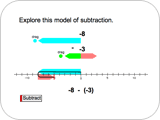
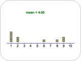
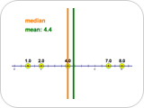
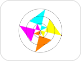
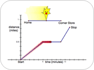
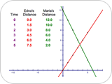
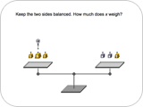
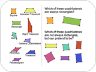
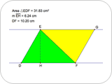
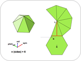

|
Middle GradesNOTE: If you are using Internet Explorer and are unable to download the .zip activity files, right-click the download link and choose Save Target As to save to your computer.  Right or Left: Adding and Subtracting IntegersStudents add and subtract integers using animations on a number line and understand that subtracting an integer is the same as adding its opposite. Download Activity Files (.zip)  Making Means: Data Distribution and AveragesStudents drag data points on a number line and observe how the mean of their values changes. Students can add, remove, and drag the data points to different locations to create examples of data sets with a given mean. Download Activity Files (.zip)  Mean Meets the Median: Measures of Central TendencyStudents drag a fixed number of data points to different locations on a number line and observe the effects on the median and the mean. Students can explore the difference in the median that occurs between having an even and odd number of data points. The emphasis of the activity is not so much on calculating the values of the mean or median given a data set, but on understanding how the mean and median behave depending both on how the data is distributed and on the number of data points. Download Activity Files (.zip)  Making a Kaleidoscope: Exploring RotationsStudents create virtual kaleidoscopes by rotating quadrilaterals and then animating them. Students learn that rotated figures keep their size and shape; only their orientation changes. Students make a variety of kaleidoscopes, each with a different number of quadrilaterals and amount of rotation. Download Activity Files (.zip)  Mellow Yellow: Interpreting GraphsStudents interpret linear piecewise time-distance graphs that represent different stories about a character, Mellow Yellow. They decide whether a given graph corresponds to the motions (walking fast, walking slow, stopping, going backward) described in the story. Students then create stories based on given graphs and create graphs based on given stories. Download Activity Files (.zip)  Hikers: Solving Through Multiple RepresentationsStudents use tables, graphs, and equations to represent and solve a real-world problem about two hikers walking at different speeds in opposite directions along the same trail. Download Activity Files (.zip)  Balancing with Balloons: Solving Equations with NegativesStudents use a Sketchpad pan balance model to solve a sequence of equations with positive numbers and variables, represented by weights, and negative numbers and variables, represented by balloons. As the problems increase in difficulty, students transfer the manipulation of the pan balance to solving equations independent of the balance. Download Activity Files (.zip)  Quadrilateral Pretenders: Classifying QuadrilateralsStudents drag edges and vertices of various Sketchpad quadrilaterals to discover which are constructed to have specific characteristics. As they make distinctions on the basis of characteristics, they deepen their understanding of the definitions of various quadrilaterals, their properties, and the relationships among them. Download Activity Files (.zip)  Parallel Pairs: Parallelogram and Triangle AreaStudents explore the relationship between the areas of parallelograms and triangles using a process called shearing. Students discover that shearing does not affect the area, but changing the lengths of the height and base does. Based on their observations, students write formulas for area of a parallelogram and area of a triangle. Download Activity Files (.zip)  Pyramid Dissection: Surface AreaStudents find the surface area of a regular pyramid (a pyramid with a regular polygon base) using a net that appears along a three-dimensional view of the pyramid. They ensure the generality of their results by changing the dimensions and number of faces of the base. By increasing the number of faces, students extend their results to the surface area of a cone, giving them an informal opportunity to think about limits. Download Activity Files (.zip) |